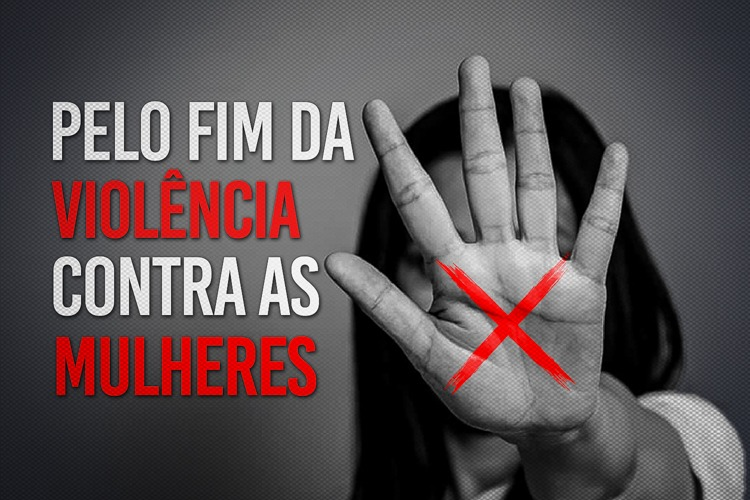

Qualquer ação ou omissão baseada no gênero que cause morte, lesão, sofrimento físico, sexual ou psicológico e dano moral ou patrimonial é considerada violência doméstica.
Como pode se enquadrar a Lei Maria da Penha:É qualquer conduta contra a integridade física e saúde corporal da mulher. Ex.: tapas, empurrões, puxões de cabelo, socos, agressões com objetos cortantes e perfurantes, entre outros.
Violência doméstica é um padrão de comportamento que envolve violência ou outro tipo de abuso por parte de uma pessoa contra outra num contexto doméstico, como no caso de um casamento ou união de facto, ou contra crianças ou idosos. Quando é perpetrada por um cônjuge ou parceiro numa relação íntima contra o outro cônjuge ou parceiro denomina-se violência conjugal, podendo ocorrer tanto entre relações heterossexuais como homossexuais, ou ainda entre antigos parceiros ou cônjuges. A violência doméstica pode assumir diversos tipos, incluindo abusos físicos, verbais, emocionais, económicos, religiosos, reprodutivos e sexuais. Estes abusos podem assumir desde formas subtis e coercivas até violação conjugal e abusos físicos violentos como sufocação, espancamento, mutilação genital feminina e ataques com ácido que provoquem desfiguração ou morte. Os homicídios domésticos incluem o apedrejamento, imolação de noivas, morte por dote e crimes de "honra".
Como evitar:Não consuma pornografia infantil. Divulgue informações de como identificar e prevenir violência contra a mulher nas suas redes. Participe de reuniões e eventos promovidos por organizações de enfrentamento a violência baseada em gênero. Muitas entidades públicas e da sociedade mantêm esses espaços.
